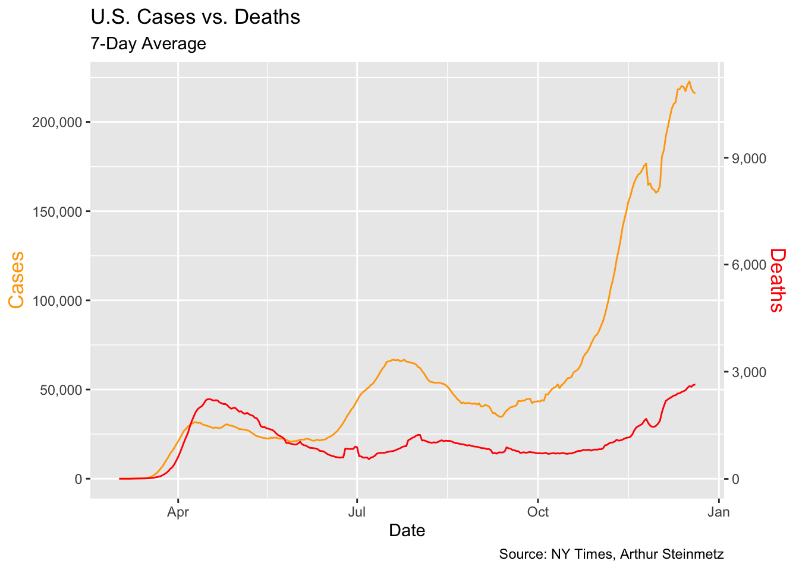

COVID case/death and vaccine
library(tidyverse)
library(lubridate)
library(broom)
library(knitr)
knitr::opts_chunk$set(echo = TRUE)While we look into the cases and mortality in the US and New York State, We also have a fascination of tracking the course of this pandemic. Do we actually have power over this black swan event?
Tracking the Course of the COVID Pandemic
By using NY Times COVID tracking data from the very beginning of COVID onset, we firstly refresh what has happened and what has changed.
us_states_long = read_csv("./us_states_long.csv")
us_states =
us_states_long %>%
filter(date > as.Date("2020-03-01")) %>%
pivot_wider(names_from = "data_type",
values_from = "value") %>%
rename(state = location) %>%
select(date, state, cases_total, deaths_total) %>%
mutate(state = as_factor(state)) %>%
arrange(state, date) %>%
group_by(state) %>%
mutate(
cases_7day = (cases_total - lag(cases_total, 7)) / 7,
deaths_7day = (deaths_total - lag(deaths_total, 7)) / 7)
us <- us_states %>%
group_by(date) %>%
summarize(across(
.cols = where(is.double),
.fns = function(x) sum(x, na.rm = T),
.names = "{col}"
))
us[10:20, ] %>%
knitr::kable()| date | cases_total | deaths_total | cases_7day | deaths_7day |
|---|---|---|---|---|
| 2020-03-11 | 1263 | 37 | 130.0000 | 3.428571 |
| 2020-03-12 | 1668 | 43 | 178.8571 | 4.142857 |
| 2020-03-13 | 2224 | 50 | 243.2857 | 4.714286 |
| 2020-03-14 | 2898 | 60 | 317.0000 | 5.571429 |
| 2020-03-15 | 3600 | 68 | 391.5714 | 6.142857 |
| 2020-03-16 | 4507 | 91 | 507.0000 | 9.142857 |
| 2020-03-17 | 5906 | 117 | 668.7143 | 12.285714 |
| 2020-03-18 | 8350 | 162 | 991.8571 | 17.857143 |
| 2020-03-19 | 12393 | 212 | 1511.2857 | 24.142857 |
| 2020-03-20 | 18012 | 277 | 2251.4286 | 32.428571 |
| 2020-03-21 | 24528 | 360 | 3086.1429 | 42.857143 |
Through a glance of the table, we aggregate the cases and deaths in the unit of 7-day for national level. Now we are wondering what is the relationship between positive cases and deaths? How has it varied as the pandemic has progressed in time? Through a line graph showing trends in cases and deaths in the U.S, we are able to tentatively examine and hypothesize the correlation between the weekly cases and deaths.
coeff <- 20
# Since deaths_7day is too small to plot at the same time with cases, we add a random number to make deaths_7day more visible, "10" is not work so well, ~30 seems more suitable
us %>%
ggplot(aes(date, cases_7day)) +
geom_line(color = "orange") +
theme(legend.position = "none") +
geom_line(aes(x = date, y = deaths_7day * coeff), color = "red") +
scale_y_continuous(
labels = scales::comma,
name = "Cases",
sec.axis = sec_axis(deaths_7day ~ . / coeff,
name = "Deaths",
labels = scales::comma
)
) +
theme(
axis.title.y = element_text(color = "orange", size = 13),
axis.title.y.right = element_text(color = "red", size = 13)
) +
labs(
title = "U.S. Cases vs. Deaths",
subtitle = "7-Day Average",
caption = "Source: NY Times, Arthur Steinmetz",
x = "Date"
)
While the line graph shows that the more cases, the less deaths in general trend, it is apprently not a reasonable relationship to conclude. Rather, we would hypothesize that the declining mortality rate as we have come to better tactics handling COVID. Thus, we turn to a simple linear regression to prove our thoughts on whether the relationship between cases and deaths is highly conditioned on date.
Relationship Between Cases and Deaths
lm_df =
lm(deaths_7day ~ cases_7day + date, data = us) %>%
broom::tidy() As predictors both have significant p-value, “date” weights more than “cases_7day” in predicting the deaths_7day. Therefore, the death versus cases would be more efficient to show a correlation if it is adjusted by time series or lead-lag analysis. Overall, the death rate has lowered as well as the positive cases has slowed down its aggressiveness in terms of exponential growth but how did this happen? Can we ascribe this to the accessibility of vaccine?
Modeling the Effectiveness of Vaccination
By taking calculated incidence rates from CDC in 2021, which suggests cases among persons who were not fully vaccinated compared with those among fully vaccinated persons decreased from 11.1 to 4.6, we, thus, try to model a hypothesized comparison for cases from the onset of pandemic and see how that might bend when the very first vaccine is available on 12.14, 2020.
CDC Reference: Scobie HM, Johnson AG, Suthar AB, et al. Monitoring Incidence of COVID-19 Cases, Hospitalizations, and Deaths, by Vaccination Status — 13 U.S. Jurisdictions, April 4–July 17, 2021. MMWR Morb Mortal Wkly Rep 2021;70:1284–1290. DOI: http://dx.doi.org/10.15585/mmwr.mm7037e1external icon.
# assuming 11.1% increase weekly
before_vac <- 0:284
#from 2020 March 1st to 12.14 the first vaccine available in the US = 9*30 + 14
cases =
round(104*(1.015857^before_vac), digits = 0)
#104 cases from US aggregation data on 2020.3.2
rbind(before_vac, cases)## [,1] [,2] [,3] [,4] [,5] [,6] [,7] [,8] [,9] [,10] [,11] [,12] [,13]
## before_vac 0 1 2 3 4 5 6 7 8 9 10 11 12
## cases 104 106 107 109 111 113 114 116 118 120 122 124 126
## [,14] [,15] [,16] [,17] [,18] [,19] [,20] [,21] [,22] [,23] [,24]
## before_vac 13 14 15 16 17 18 19 20 21 22 23
## cases 128 130 132 134 136 138 140 142 145 147 149
## [,25] [,26] [,27] [,28] [,29] [,30] [,31] [,32] [,33] [,34] [,35]
## before_vac 24 25 26 27 28 29 30 31 32 33 34
## cases 152 154 157 159 162 164 167 169 172 175 178
## [,36] [,37] [,38] [,39] [,40] [,41] [,42] [,43] [,44] [,45] [,46]
## before_vac 35 36 37 38 39 40 41 42 43 44 45
## cases 180 183 186 189 192 195 198 201 205 208 211
## [,47] [,48] [,49] [,50] [,51] [,52] [,53] [,54] [,55] [,56] [,57]
## before_vac 46 47 48 49 50 51 52 53 54 55 56
## cases 214 218 221 225 228 232 236 239 243 247 251
## [,58] [,59] [,60] [,61] [,62] [,63] [,64] [,65] [,66] [,67] [,68]
## before_vac 57 58 59 60 61 62 63 64 65 66 67
## cases 255 259 263 267 272 276 280 285 289 294 298
## [,69] [,70] [,71] [,72] [,73] [,74] [,75] [,76] [,77] [,78] [,79]
## before_vac 68 69 70 71 72 73 74 75 76 77 78
## cases 303 308 313 318 323 328 333 338 344 349 355
## [,80] [,81] [,82] [,83] [,84] [,85] [,86] [,87] [,88] [,89] [,90]
## before_vac 79 80 81 82 83 84 85 86 87 88 89
## cases 360 366 372 378 384 390 396 402 409 415 422
## [,91] [,92] [,93] [,94] [,95] [,96] [,97] [,98] [,99] [,100] [,101]
## before_vac 90 91 92 93 94 95 96 97 98 99 100
## cases 429 435 442 449 456 464 471 478 486 494 502
## [,102] [,103] [,104] [,105] [,106] [,107] [,108] [,109] [,110]
## before_vac 101 102 103 104 105 106 107 108 109
## cases 509 518 526 534 543 551 560 569 578
## [,111] [,112] [,113] [,114] [,115] [,116] [,117] [,118] [,119]
## before_vac 110 111 112 113 114 115 116 117 118
## cases 587 596 606 615 625 635 645 655 666
## [,120] [,121] [,122] [,123] [,124] [,125] [,126] [,127] [,128]
## before_vac 119 120 121 122 123 124 125 126 127
## cases 676 687 698 709 720 732 743 755 767
## [,129] [,130] [,131] [,132] [,133] [,134] [,135] [,136] [,137]
## before_vac 128 129 130 131 132 133 134 135 136
## cases 779 791 804 817 830 843 856 870 884
## [,138] [,139] [,140] [,141] [,142] [,143] [,144] [,145] [,146]
## before_vac 137 138 139 140 141 142 143 144 145
## cases 898 912 926 941 956 971 986 1002 1018
## [,147] [,148] [,149] [,150] [,151] [,152] [,153] [,154] [,155]
## before_vac 146 147 148 149 150 151 152 153 154
## cases 1034 1051 1067 1084 1101 1119 1137 1155 1173
## [,156] [,157] [,158] [,159] [,160] [,161] [,162] [,163] [,164]
## before_vac 155 156 157 158 159 160 161 162 163
## cases 1191 1210 1230 1249 1269 1289 1309 1330 1351
## [,165] [,166] [,167] [,168] [,169] [,170] [,171] [,172] [,173]
## before_vac 164 165 166 167 168 169 170 171 172
## cases 1373 1394 1417 1439 1462 1485 1509 1533 1557
## [,174] [,175] [,176] [,177] [,178] [,179] [,180] [,181] [,182]
## before_vac 173 174 175 176 177 178 179 180 181
## cases 1582 1607 1632 1658 1684 1711 1738 1766 1794
## [,183] [,184] [,185] [,186] [,187] [,188] [,189] [,190] [,191]
## before_vac 182 183 184 185 186 187 188 189 190
## cases 1822 1851 1880 1910 1940 1971 2002 2034 2066
## [,192] [,193] [,194] [,195] [,196] [,197] [,198] [,199] [,200]
## before_vac 191 192 193 194 195 196 197 198 199
## cases 2099 2132 2166 2201 2236 2271 2307 2344 2381
## [,201] [,202] [,203] [,204] [,205] [,206] [,207] [,208] [,209]
## before_vac 200 201 202 203 204 205 206 207 208
## cases 2419 2457 2496 2535 2576 2616 2658 2700 2743
## [,210] [,211] [,212] [,213] [,214] [,215] [,216] [,217] [,218]
## before_vac 209 210 211 212 213 214 215 216 217
## cases 2786 2831 2875 2921 2967 3014 3062 3111 3160
## [,219] [,220] [,221] [,222] [,223] [,224] [,225] [,226] [,227]
## before_vac 218 219 220 221 222 223 224 225 226
## cases 3210 3261 3313 3365 3419 3473 3528 3584 3641
## [,228] [,229] [,230] [,231] [,232] [,233] [,234] [,235] [,236]
## before_vac 227 228 229 230 231 232 233 234 235
## cases 3699 3757 3817 3877 3939 4001 4065 4129 4195
## [,237] [,238] [,239] [,240] [,241] [,242] [,243] [,244] [,245]
## before_vac 236 237 238 239 240 241 242 243 244
## cases 4261 4329 4397 4467 4538 4610 4683 4757 4833
## [,246] [,247] [,248] [,249] [,250] [,251] [,252] [,253] [,254]
## before_vac 245 246 247 248 249 250 251 252 253
## cases 4909 4987 5066 5147 5228 5311 5395 5481 5568
## [,255] [,256] [,257] [,258] [,259] [,260] [,261] [,262] [,263]
## before_vac 254 255 256 257 258 259 260 261 262
## cases 5656 5746 5837 5929 6023 6119 6216 6314 6415
## [,264] [,265] [,266] [,267] [,268] [,269] [,270] [,271] [,272]
## before_vac 263 264 265 266 267 268 269 270 271
## cases 6516 6620 6725 6831 6940 7050 7161 7275 7390
## [,273] [,274] [,275] [,276] [,277] [,278] [,279] [,280] [,281]
## before_vac 272 273 274 275 276 277 278 279 280
## cases 7507 7627 7747 7870 7995 8122 8251 8382 8514
## [,282] [,283] [,284] [,285]
## before_vac 281 282 283 284
## cases 8649 8787 8926 9067# and the number of increasing
ggplot() +
geom_point(aes(x = before_vac, y = cases)) +
geom_line(aes(x = before_vac, y = cases)) +
xlab("Day") +
ylab("Total Cases")
#assuming 4.6% increase weekly after vaccine for another 100 days
after_vac <- 285:385
# data for without vaccine
without_vac <- c(before_vac, after_vac)
cases_after <- round(104*(1.015857^without_vac), digits = 0)
# data with vaccine
case_vac.285to300 =
round(cases[285]*(1.00657143^(1:101)), digits = 0)
# plot comparing hypothesized increase for before and after vaccine
ggplot() +
geom_line(aes(x = without_vac,
y = cases_after)) +
geom_point(aes(x = before_vac,
y = cases)) +
geom_line(aes(x = after_vac,
y = case_vac.285to300), col = "blue") +
xlab("Day") +
ylab("Total Cases")
Apparently without any public health intervention, cases are hard to slow down, but does our hypothesized bending curve with vaccine available corresponding to the actual cases number? If it is very different, how long does vaccine take its effectiveness? How does the distribution of vaccine by sex, age, and race etc. demographic characteristics impact on the effectiveness of vaccine distribution and containing cases increment?
case_vac.285to300 ## [1] 9127 9187 9247 9308 9369 9430 9492 9555 9618 9681 9744 9808
## [13] 9873 9938 10003 10069 10135 10202 10269 10336 10404 10472 10541 10610
## [25] 10680 10750 10821 10892 10964 11036 11108 11181 11255 11329 11403 11478
## [37] 11554 11629 11706 11783 11860 11938 12017 12096 12175 12255 12336 12417
## [49] 12498 12580 12663 12746 12830 12914 12999 13085 13171 13257 13344 13432
## [61] 13520 13609 13699 13789 13879 13970 14062 14155 14248 14341 14435 14530
## [73] 14626 14722 14819 14916 15014 15113 15212 15312 15413 15514 15616 15718
## [85] 15822 15926 16030 16136 16242 16348 16456 16564 16673 16782 16893 17004
## [97] 17116 17228 17341 17455 17570#[101] 17570
cases_after## [1] 104 106 107 109 111 113 114 116 118 120 122 124
## [13] 126 128 130 132 134 136 138 140 142 145 147 149
## [25] 152 154 157 159 162 164 167 169 172 175 178 180
## [37] 183 186 189 192 195 198 201 205 208 211 214 218
## [49] 221 225 228 232 236 239 243 247 251 255 259 263
## [61] 267 272 276 280 285 289 294 298 303 308 313 318
## [73] 323 328 333 338 344 349 355 360 366 372 378 384
## [85] 390 396 402 409 415 422 429 435 442 449 456 464
## [97] 471 478 486 494 502 509 518 526 534 543 551 560
## [109] 569 578 587 596 606 615 625 635 645 655 666 676
## [121] 687 698 709 720 732 743 755 767 779 791 804 817
## [133] 830 843 856 870 884 898 912 926 941 956 971 986
## [145] 1002 1018 1034 1051 1067 1084 1101 1119 1137 1155 1173 1191
## [157] 1210 1230 1249 1269 1289 1309 1330 1351 1373 1394 1417 1439
## [169] 1462 1485 1509 1533 1557 1582 1607 1632 1658 1684 1711 1738
## [181] 1766 1794 1822 1851 1880 1910 1940 1971 2002 2034 2066 2099
## [193] 2132 2166 2201 2236 2271 2307 2344 2381 2419 2457 2496 2535
## [205] 2576 2616 2658 2700 2743 2786 2831 2875 2921 2967 3014 3062
## [217] 3111 3160 3210 3261 3313 3365 3419 3473 3528 3584 3641 3699
## [229] 3757 3817 3877 3939 4001 4065 4129 4195 4261 4329 4397 4467
## [241] 4538 4610 4683 4757 4833 4909 4987 5066 5147 5228 5311 5395
## [253] 5481 5568 5656 5746 5837 5929 6023 6119 6216 6314 6415 6516
## [265] 6620 6725 6831 6940 7050 7161 7275 7390 7507 7627 7747 7870
## [277] 7995 8122 8251 8382 8514 8649 8787 8926 9067 9211 9357 9506
## [289] 9656 9810 9965 10123 10284 10447 10612 10781 10952 11125 11302 11481
## [301] 11663 11848 12036 12227 12420 12617 12817 13021 13227 13437 13650 13866
## [313] 14086 14310 14537 14767 15001 15239 15481 15726 15976 16229 16486 16748
## [325] 17013 17283 17557 17836 18118 18406 18698 18994 19295 19601 19912 20228
## [337] 20548 20874 21205 21542 21883 22230 22583 22941 23305 23674 24049 24431
## [349] 24818 25212 25612 26018 26430 26849 27275 27708 28147 28593 29047 29507
## [361] 29975 30450 30933 31424 31922 32428 32943 33465 33996 34535 35082 35639
## [373] 36204 36778 37361 37953 38555 39167 39788 40419 41059 41710 42372 43044
## [385] 43726 44420#[386] 44420The actual new cases increases on 3.14.2021 after around 100 days of vaccine available is ~37989 recorded by the New York Times. The factual new cases is in between our hypothesized cases without 44420 and with vaccine 17570. We could possibly say that the early-stage effectiveness of vaccine is not as potent as later in the 2021 while the CDC recorded or there is a lag in vaccine effective but is there other reasons that can result in the extra increment in new cases. Now we want to examine the vaccine distribution by demographic characteristics and hesitancy.